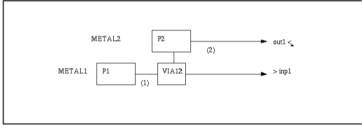
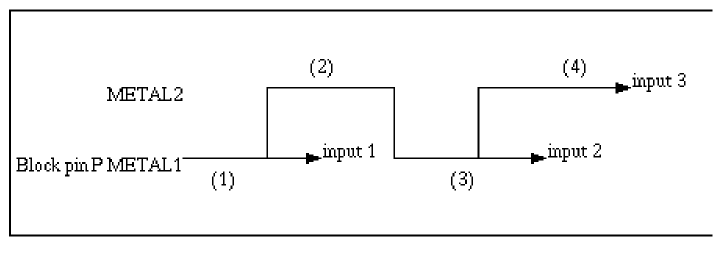
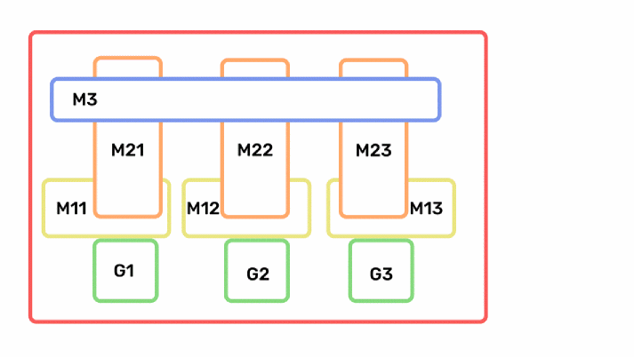
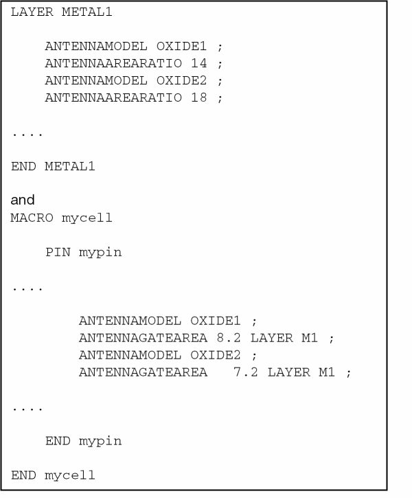

Running Step Extract Form
运行步骤提取表单
Use the Running step Extract form to extract geometries on signal or power nets or to calculate process antenna information.
使用运行步骤提取表单可提取信号或电源网络上的几何图形，或计算工艺天线信息。
This form contains the following tabs.
此表单包含以下选项卡。
Signal Tab
信号选项卡
The following table describes the fields available on the Signal tab of the Running Step Extract form.
下表说明运行步骤提取表单 Signal 选项卡上可用的字段。
Power Tab
电源选项卡
The following table describes the fields available on the Power tab of the Running Step Extract form.
下表说明运行步骤提取表单 Power 选项卡上可用的字段。
Antenna Tab
天线选项卡
|
Field 字段 |
Description 说明 |
|---|---|
|
Calculates antenna values hierarchically by summing the antenna data on standard abstracts. By default, this option is switched off and disabled. It becomes active only when one of the other antenna calculation options is selected. 通过汇总标准抽象（standard abstracts）上的天线数据来分层计算天线值。默认关闭且不可用；只有当选择了其他某个天线计算选项后才会激活。 This option bypasses the check for Gate or Drain regions in the Layer Assignment for Antenna Regions table because these measurements are not required for hierarchical antenna calculations. If this option is selected and there are no abstract instances, Abstract Generator performs a flat antenna calculation instead. If this is the case and the Gate and Drain regions are not specified, Abstract Generator warns you that neither process antenna information has been calculated nor the diffusion and polysilicon geometries have been extracted. 由于分层天线计算不需要这些测量值，此选项会跳过对 Layer Assignment for Antenna Regions 表中 Gate 或 Drain 区域的检查。若选择该选项且不存在 abstract 实例，Abstract Generator 将改为执行平面（flat）天线计算。若此时未指定 Gate 与 Drain 区域，Abstract Generator 会警告：既未计算工艺天线信息，也未提取扩散与多晶硅几何。 计算
The following equation is the 下式给出了某条网络上 abstract 实例端子的
其中：
|
|
|
If 若未指定 |
|
|
Calculates either the 用于为输入引脚计算天线值：若使用 LEF 5.3，则计算 The following example illustrates how the antenna values are calculated for inout pins. 下例说明如何为 inout 引脚计算天线值。 示例
Consider the following standard cell output that has internal feedback to the gate 考虑如下标准单元输出：其内部反馈连接到 gate 
|
|
|
Calculates either the 用于为输出引脚与三态引脚计算天线值：若使用 LEF 5.3，则计算 |
|
|
Calculates either the 用于为 IO 引脚与三态引脚计算天线值：若使用 LEF 5.3，则计算 |
|
|
Calculates the area of metal that would be connected to the pin when that layer is fabricated. This option is designed to be used with blocks. The result is expressed in square microns. By default, this option is switched off and disabled. It becomes active only when the non-side area ratio is specified in the technology file. 计算当某金属层加工完成时与引脚相连的金属面积。该选项主要用于 blocks。结果以平方微米表示。默认关闭且不可用；仅当技术文件中指定了非侧面积比（non-side area ratio）时才会激活。
The calculated antenna metal area is added by the router to the routing metal at the next level up in order to compute whether or not there is an antenna violation on that pin or on any other pin on the same net. Use the 计算得到的天线金属面积会被布线器加到上一层的布线金属上，用于判断该引脚或同一网络上的其他引脚是否存在天线违规。使用
Consider the following example that describes the calculation of 请参考下例，了解 示例 For each metal layer, you must calculate the area of metal attached to the pin that will be connected when that layer is fabricated, that is, the metal on the same external pin side of some higher level piece of metal. You need to calculate the metal area only for those layers where there is pin geometry and any higher layers used internally on the connection to the gate. 对每一层金属，你都必须计算当该层加工完成时与引脚相连的金属面积，即位于某段更高层金属、同一外部引脚侧的金属。只需对包含引脚几何的层，以及在连接到 gate 过程中内部使用到的更高层进行金属面积计算。  |
|
|
根据上图：
See Keywords Used in Antenna Calculation 参见 Keywords Used in Antenna Calculation。
To enable Abstract Generator to consider only those paths that contain pins and not all the shapes and paths that are part of terminal, you can use the 若希望 Abstract Generator 仅考虑包含引脚的路径，而非端子（terminal）中所有图形与路径，可使用
Consider two pins, 考虑  |
|
|
For example, gateArea 例如，gateArea Otherwise, Abstract Generator considers all the paths, that is, 否则，Abstract Generator 会考虑所有路径，即：
gateArea gateArea |
|
|
Calculates the side area of the metal (perimeter x thickness) that would be connected to the pins when that layer is fabricated. By default, this option is switched off and disabled. It becomes active only when the side area ratio is specified in the technology file. 计算当某金属层加工完成时与引脚相连的金属侧面积（周长 × 厚度）。默认关闭且不可用；仅当技术文件中指定了侧面积比（side area ratio）时才会激活。 |
|
|
This section lets you assign layers to antenna regions for identifying the gate and drain regions and to enable antenna calculation. This field is enabled when at least one of the calculate antenna options is active. 本节用于将层分配到天线区域，以识别 gate 与 drain 区域并启用天线计算。当至少启用一个“计算天线”选项时，该字段可用。
If the information in the technology file is set up correctly (layers need to be defined in the 如果技术文件中的信息设置正确（需要在
In LEF, polysilicon and diffusion layers are defined as masterslice layers and both are converted to poly layers after the LEF data is imported to a technology file. Distinction between these layers is required for antenna calculation. So, Abstract Generator searches for the layer names 在 LEF 中，多晶硅与扩散层被定义为 masterslice 层；当将 LEF 数据导入技术文件后，它们都会被转换为 poly 层。天线计算需要区分这些层，因此 Abstract Generator 会在层类型 |
|
|
Lets you select the polysilicon and diffusion layers specified in the technology file. 允许选择技术文件中指定的多晶硅与扩散层。 |
|
|
Lets you enter a layer-geometry specification defining the gate or drain geometry regions. For example, 允许输入用于定义 gate 或 drain 几何区域的层-几何规格。例如：
Use the 可参考 You can define only one geometry specification for each layer. 每个层只能定义一条几何规格。 |
|
|
Specifies whether the layer is a Gate or Drain region. 用于指定该层属于 Gate 区域还是 Drain 区域。
|
|
|
Lets you apply a unique oxide type for up to 32 diffusion layers. This option offers 32 oxide types (the maximum number handled by LEF): Oxide1 … Oxide32. 允许为最多 32 个扩散层指定独立的氧化层类型。该选项提供 32 种氧化层类型（LEF 支持的最大数量）：Oxide1 … Oxide32。 If you list more than four diffusion layers, layers with the same Oxide type are treated in the same way. You can also select Oxide1 for all the listed diffusion layers, in effect replicating the LEF 5.7 or above antenna style model. 如果列出超过四个扩散层，具有相同 Oxide 类型的层会以相同方式处理。你也可以为列出的所有扩散层都选择 Oxide1，从而等效复现 LEF 5.7 或以上的天线模型风格。
If the Oxide1 keyword is associated with a particular diffusion layer, it means that the gate area over this diffusion area and the 如果某扩散层关联了 Oxide1 关键字，表示该扩散区域上方的 gate 面积以及与该 gate 面积相关的 An example of LEF 5.5 could contain: LEF 5.5 的示例可能包含：  |
|
|
The Oxide option is disabled if you select Gate as the Region type for a particular layer. Similarly, if you select an Oxide type for a layer, the Region type is changed to Drain. 如果为某层选择 Gate 作为 Region 类型，则 Oxide 选项会被禁用。反之，如果为某层选择了某种 Oxide 类型，则其 Region 类型会被改为 Drain。
The default value 默认值 |
|
|
Use different layer assignments for antenna calculations only |
Lets you set layer assignments for antenna extraction different from those set for signal net extraction set on the Relationship between Signal and Antenna Tabs. Selecting this option activates the Layer Assignment for Antenna Extraction table and consequently over-rides any Layer Assignment for Signal Extraction option settings. A “behind-the-scenes” antenna extraction calculation can then be performed. 允许将天线提取的层分配设置为不同于信号网络提取（见 Relationship between Signal and Antenna Tabs）的配置。选择该选项会激活 Layer Assignment for Antenna Extraction 表，从而覆盖信号提取的层分配设置，随后可执行“幕后（behind-the-scenes）”天线提取计算。
If you are performing “behind-the-scenes” antenna calculations and using replay scripts, you must change the 如果在执行“幕后”天线计算并使用 replay 脚本，必须将脚本中的 Selecting this option can be useful, for example, in such cases where you want to create pins from shapes which are touching the initial pin on the same layer and, if you had to specify the via layers to extract through, the Extract step may create pin shapes on other metal layers which you do not require. This, in turn, could cause electro-migration issues. By default, this option is disabled and off. It is activated if one or more calculate antenna options are selected. See Relationship between Signal and Antenna Tabs. 选择该选项在某些场景下很有用，例如你希望从与初始引脚在同一层且接触的图形创建引脚；如果还必须指定要通过的过孔层进行提取，Extract 步骤可能会在你不需要的其他金属层上创建引脚图形，从而可能带来电迁移问题。默认情况下该选项关闭且不可用；当选择了一个或多个“计算天线”选项后才会激活。参见 Relationship between Signal and Antenna Tabs。 |
|
This section is active when the Use different layer assignments for antenna calculations only option is selected. 当选择 Use different layer assignments for antenna calculations only 选项时，本节会被激活。 |
|
|
Lets you specify the layer for which you want to extract antenna data. 用于指定要提取天线数据的层。 |
|
|
Lets you enter a for each layer through which you want to extract antenna data. 用于为每个要提取天线数据的层输入几何规格。 |
|
|
Signal nets to be excluded from antenna calculation |
Allows you to specify the nets that should not be considered for antenna extraction and therefore, lets you avoid antenna calculations for the specified pins. For example, by specifying the expression as 允许指定不参与天线提取的网络，从而避免对指定引脚进行天线计算。例如，将要排除的信号网络表达式设置为 This field is enabled only if one of the calculate antenna options is selected. 仅当选择了某个“计算天线”选项时，该字段才可用。 |
General Tab
常规选项卡
Related Topics
相关主题
Specifying Layers and Geometries for Extraction
Extracting Power Nets in Standalone Abstract Generator
Processing Antenna Information in Standalone Abstract Generator
Specifying Connectivity Information in Designs
Return to top